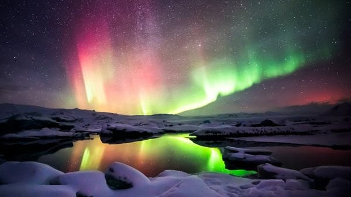
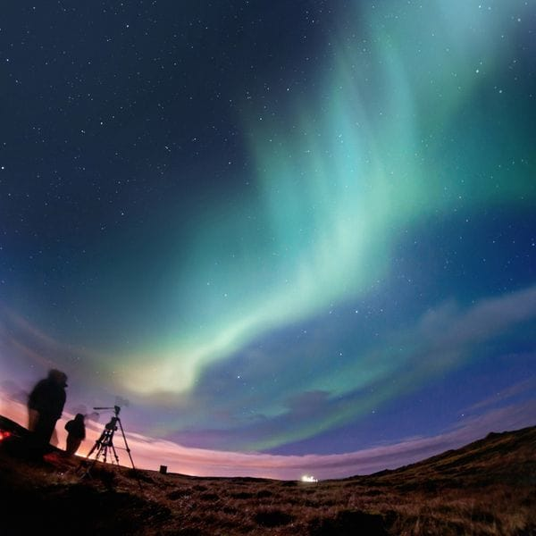
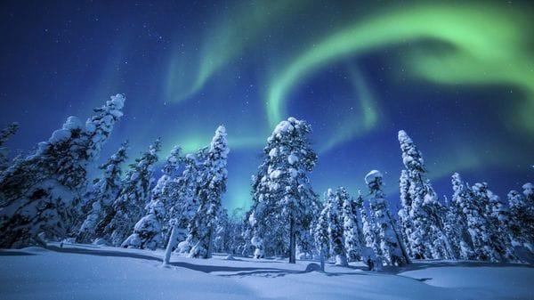
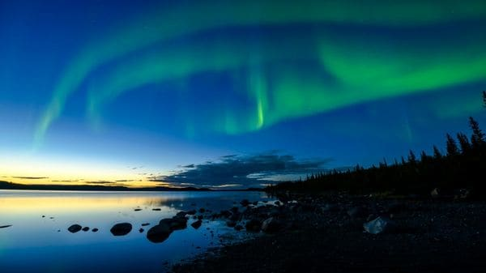
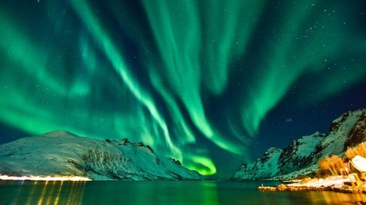
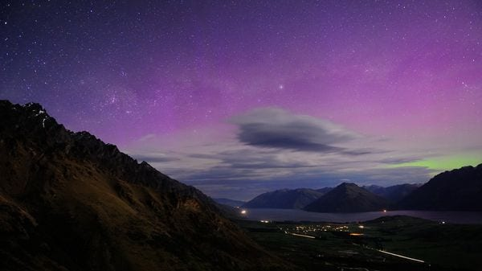

Estos fenómenos que ocurren en los extremos más gélidos del planeta Tierra tiñen el firmamento de luces de colores. Dónde se pueden apreciar con mayor intensidad, desde Noruega y Alaska hasta Nueva Zelanda
10 de marzo de 2017
La aurora boreal es un fenómeno increíble que parece salido de un mundo fantástico
La aurora boreal es un fenómeno increíble que parece salido de un mundo fantástico, más cercano a la ficción que a la realidad del planeta Tierra. Estas luces del Norte nacen en el firmamento como manchas o columnas de diferentes colores, producto de la radiación solar. Se puede observar en los extremos más gélidos del mundo, en el Polo Norte y en el Sur, donde este fenómeno es conocido como aurora austral.
Los mejores momentos del año para observar este fenómeno son entre los meses de septiembre y marzo en el hemisferio norte y entre marzo y septiembre en el hemisferio sur. A continuación, cinco lugares en el momento para maravillarse:

Islandia, de poco más de 100 mil kilómetros cuadrados, se encuentra en el Atlántico Norte |
Islandia Islandia, de poco más de 100 mil kilómetros cuadrados, se encuentra en el Atlántico Norte, pegada al círculo polar ártico y sobre la fractura de las placas tectónicas norteamericana y europea. Eso determina que soporte una intensa actividad volcánica y tenga bajo sus pies una fuente de geotérmica como pocos lugares del mundo. La latitud y la longitud de este país favorecen el avistaje de auroras boreales, y los mejores lugares para verlas son cerca de las costas. Los mejores momentos para presenciar este fenómeno son desde finales de agosto hasta abril. |

Fairbanks es una ciudad de Alaska, Estados Unidos. |
Fairbanks, Alaska Fairbanks es una ciudad de Alaska, Estados Unidos, ubicada dos grados debajo del Ártico cerca del aeropuerto internacional y cerca del Parque Nacional Denali, por lo que es el mejor sitio del país del Norte para ver auroras boreales. Desde finales de agosto hasta el mes de abril se puede apreciar este fenómeno con mayor facilidad. |

Yellowknife es la capital de los Territorios del Noroeste en Canadá, con una población de 23.634 habitantes |
Yellowknife, Canadá Fairbanks es una ciudad de Alaska, Estados Unidos, ubicada dos grados debajo del Ártico cerca del aeropuerto internacional y cerca del Parque Nacional Denali, por lo que es el mejor sitio del país del Norte para ver auroras boreales. Desde finales de agosto hasta el mes de abril se puede apreciar este fenómeno con mayor facilidad. |

Tromsø es la mayor área urbana en el norte de Noruega, muy cerca del Círculo Ártico |
Tromsø, Noruega Tromsø es la mayor área urbana en el norte de Noruega, muy cerca del Círculo Ártico. Sin embargo, gracias a la corriente del Golfo el clima es sorprendentemente moderado. Expertos del National geographic aseguran que el pueblo de Ersfjordbotn es ideal para ver auroras boreales. Se recomienda ir desde mediados de septiembre hasta finales de marzo. |

En el hemisferio sur, este fenómeno se conoce como “aurora austral” |
Tasmania y Nueva Zelanda Se habla más de auroras boreales, pero las australes son igual de increíbles. En el hemisferio sur hay varios lugares donde presenciar este fenómeno -como desde la Antártida- pero los más maravillosos se originan en el sur de Tasmania, en Australia y en Nueva Zelanda. Se pueden ver durante todo el año, pero se recomienda visitar durante el equinoccio. |